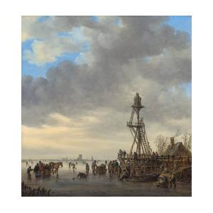

Ice Scene near a Wooden Observation Tower illustrates an important transitional moment in Van Goyen’s career, as he moved away from the tonal style. Here he concentrates on weather and atmospheric effects, such as the swiftly moving clouds that convey the day’s cold breeze and the bright blue sky peeking from behind them.This winter scene also provides a perfect opportunity for admiring Van Goyen’s technique as well as for enjoying the narrative presented. Couples skating, passengers riding a horse-drawn sled, and men setting out to ice fish indicate the range of activities enjoyed by the Dutch during the severe winters in Western Europe in the 17th century, an era known in climate history as “The Little Ice Age."
